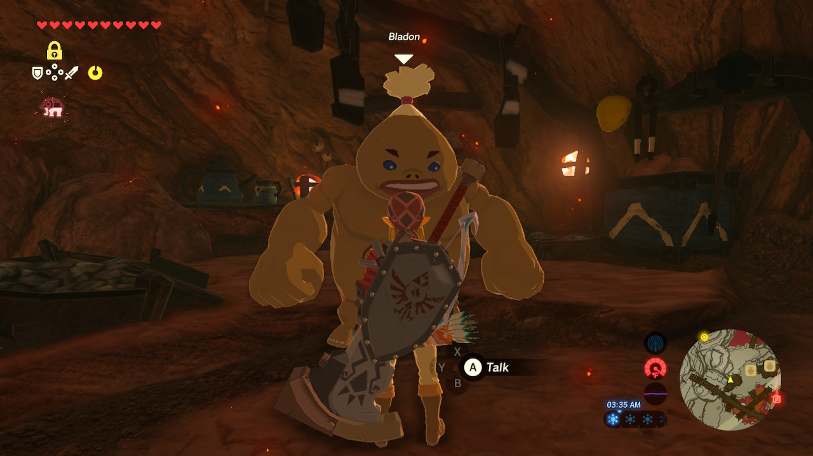
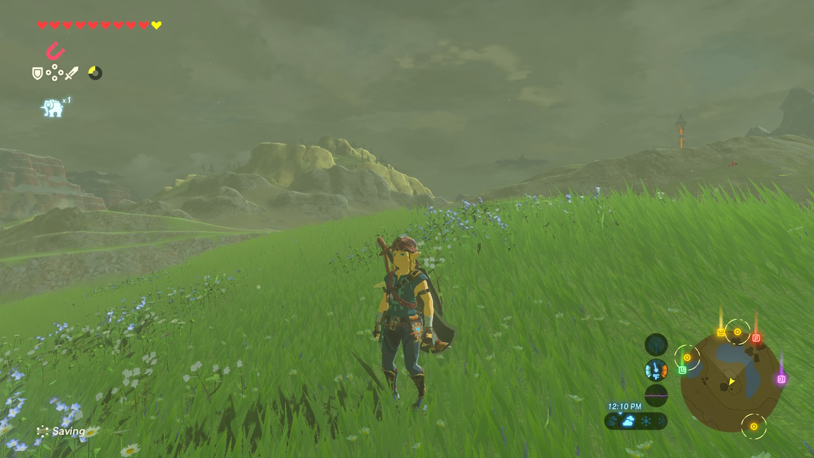
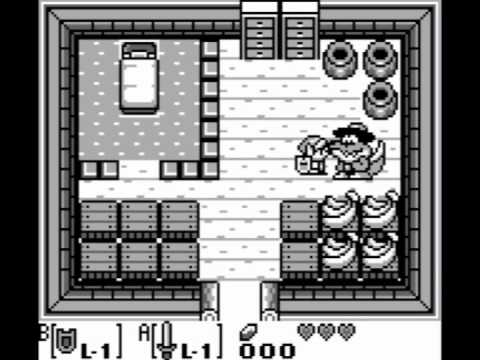
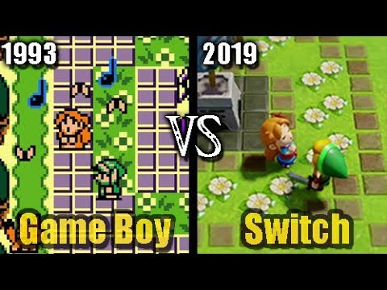
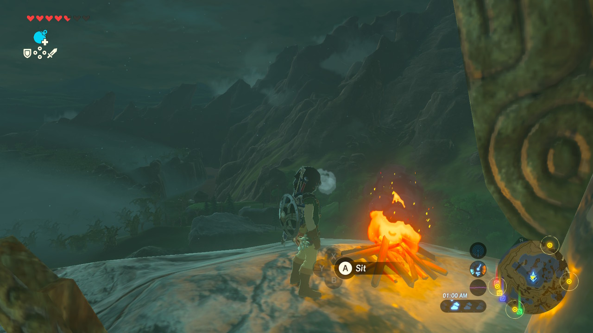
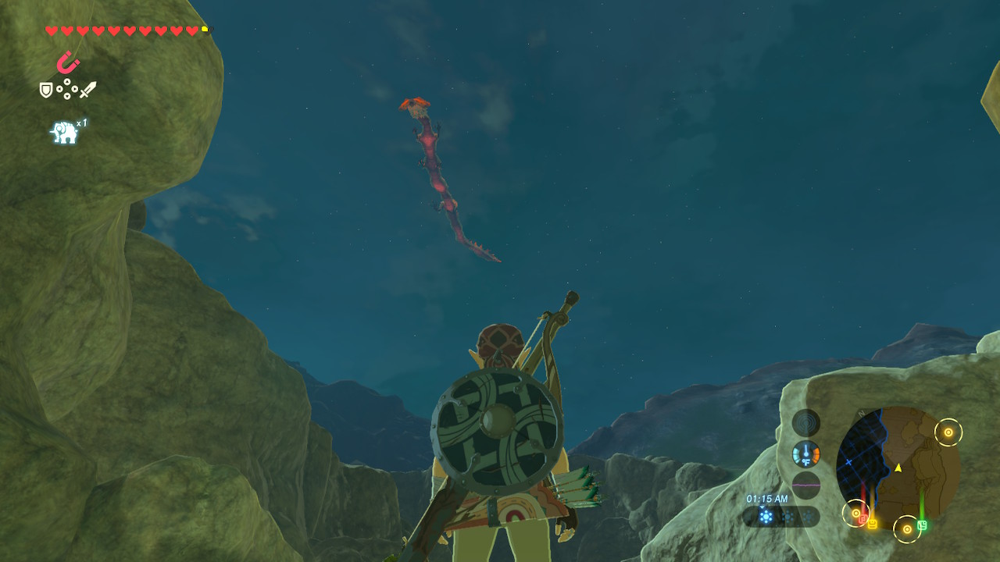
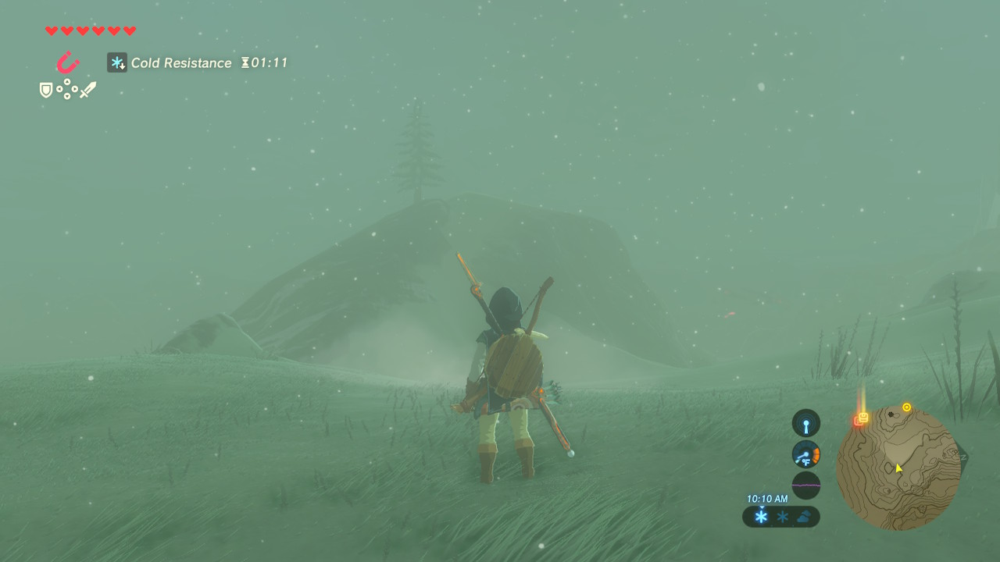
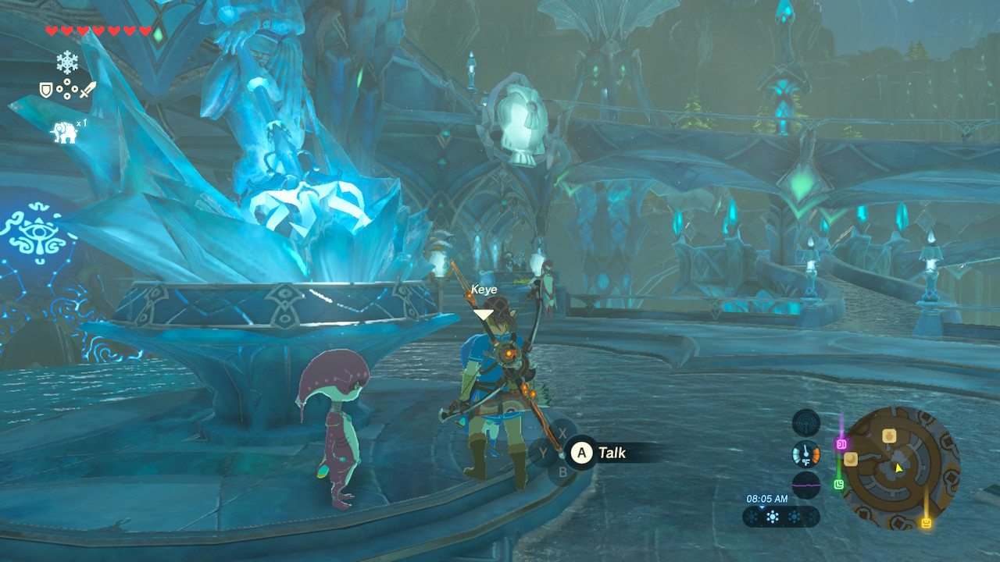
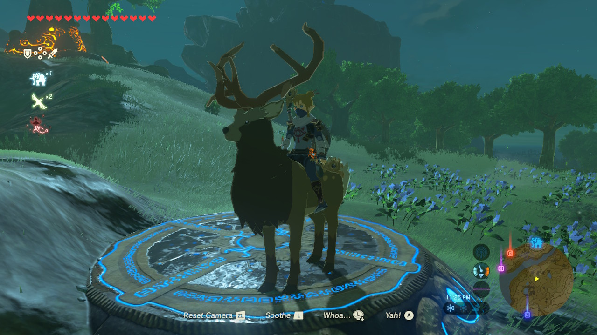
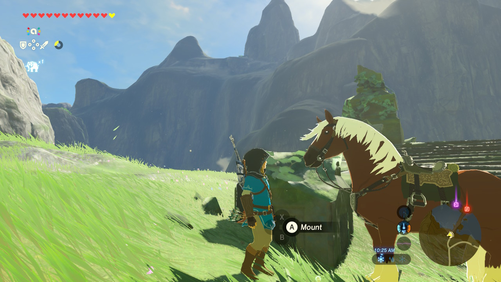

This is a divergence that is simultaneously strange and entirely predictable.
Allow me to explain.
First and foremost, I’ve been training for my first marathon in 4.5 years for the past several months. It’s largely consisted of base-building, but in the last couple of weeks we entered the “official” 16-week marathon training period…
…and my knee started pulling. Oh! And it coincided with the first week of decent summer weather we’ve had here in Athens since…2018? And if the past two weeks are any indication, this summer is going to be as bad as that brutal one in 2016.

Anyway!
Since I noticed the pulling in my knee the week before “official” training was to begin, my coach and I agreed–in the name of being super-cautious this early in the training cycle–that I would take a week off from running, focus on cross-training and physical therapy exercises, and let my knee heal up. During this time, I dove into the 2017 hit Zelda: Breath of the Wild, the new Zelda release for the Nintendo Switch, and logged–to use the technical term–a shitton of hours.

Let me back up a little further.
I’ve never been secretive about my love of video gaming (and board gaming, and regular old sportsball gaming… any kind of gaming, really). But my real passion in video games has largely been constrained to variants of first-person shooters and real-time strategy. This includes the usual suspects like Left 4 Dead 2 and StarCraft II, but also slight variations like Civilization V (haven’t gotten the hang of VI yet), Cities: Skylines, Homeworld, and Sins of a Solar Empire.
The upshot: Zelda has never really been on my radar.
I mean, of course I’m familiar with the Zelda franchise. Back in the days of the OG GameBoy, I played Link’s Awakening. A lot of it. I played through it so many times I eventually figured out how to find enough “secret seashells” to get the Master Sword just before completing the 4th of the 8 main dungeons.

(if it’s possible to get the sword sooner than that, don’t bother, I don’t want to know)
But for those who know the larger Zelda lore, this installment exists awkwardly both within but also without the Zelda story. I mean–SPOILERS for a 20+ year old game SPOILERS–it was all a dream. Or was it instead a reality that existed within our own, but vanished when the Wind Fish woke up? Who knows?

(apparently there was a Nintendo Switch remake of Link’s Awakening?)
Regardless, while the usual Zelda themes certainly exist in Link’s Awakening, the specific story points don’t. So years later it was a shock to learn that Link actually had a primary antagonist, Ganon.
When I first met my future wife, one of the many things about her that charmed me was her love of the Zelda franchise, especially Ocarina of Time. I was never super motivated to play the games myself, but something that seems almost uniquely exclusive to Zelda games: they’re incredibly fun to watch someone else play! Even better, The Lady and I soon discovered that, not only did we have different playstyles when it came to video games, but they complemented each other in a way that really helped her/us solve the puzzles in these games with ruthless efficiency.
But even after watching her crush Ganon in Ocarina of Time, Twilight Princess, and Ganon’s progenitor in Skyward Sword (which I bought her as a gift on the very first Nintendo console we ever owned together… awwwwwww), I still never felt the itch to play the game myself.
And when I likewise bought Breath of the Wild, again for her to play, I once more assumed I’d watch, point things out here and there, and let her Zelda fandom run wild. Plus, I’d seen the reviews of this installment, and knew that while they’d thrown out a lot of “typical” Zelda grind, they also added a bunch of new gaming mechanisms that, on the surface, I held my nose for:
- Breakable weapons: I’d played games where weapons only lasted for finite amounts of time, and holy shit did this mechanic annoy the crap out of me.
- Recipes: I haven’t actually played a game with this mechanic, but it’s been showing up more frequently in RPGs, a gaming genre I generally have a very, very hard time getting into.
- Seasonality: This encompasses not only night/day changes, but also changes in weather patterns in-game, and subsequent changes in clothing / preparation of countermeasures (food, elixirs) in order to survive. I’ve played a lot of games with the night/day mechanic and have found it “meh” at best, super f*ckin annoying at worst. Combined with the need to constantly swap out clothing to adjust (and potentially lose abilities the previous clothing gave me) was irksome just to think about.
- Nonlinear open world: Again, nothing against nonlinear gameplay–I for one love that Civilization has multiple win conditions, and that the StarCraft II missions are built to discourage “turtling” and force you to get creative–but as an avid follower of Zero Punctuation I know how “well” Ubisoft’s (for example) “nonlinear” “open world” games have faired, and for the life of me I couldn’t see a game on Zelda’s scope doing any better.
Boy oh boy, was I wrong.

I watched The Lady play a game of her own for quite awhile, and at some point just kinda thought: eh, why not? and started my own game.
I was hooked. I can’t even explain why; even while writing that list of grievances, I kept thinking of examples other than Breath of the Wild with those mechanics and getting annoyed all over again. And yet, these are so well-done in Breath of the Wild that I don’t even notice them. Even moreso, annoyances in previous Zelda iterations–the “forced save points” of Skyward Sword, the nails-on-a-chalkboard running-back-and-forth over the Ocarina landscape to finish a simple side quest, the rupee limitations of literally every other Zelda game (until you bought a bigger rupee purse ???), the constant hunt for more arrows, and the lack of any jumping ability–they’re all gone!
The best thing I can say about this game is that they did an incredible job of 1) identifying the annoying things of previous Zelda games and cutting them out, and 2) introducing these new mechanics in a way that felt natural and intuitive. That’s really the crux of it: the game is easy to figure out, even while the actual gameplay is incredibly, brutally, and satisfyingly challenging.
That mastery of basics is why the game scales to such a massive landscape (thank you, travel points!); that’s why there’s enough room for three distinct and gorgeous dragons that fill you with excitement every time their music comes out of nowhere;

that’s why staying in the nearest stable during a thunderstorm or going deep into the arctic tundra feels so much like curling up in front of a crackling fire on a freezing cold day;

that’s why, even after completing part of a main quest, you’ll find yourself returning over and over to the same points on the map–to see an old friend, find a new side quest, or exchange some shiny rocks you could sell anywhere for a better price but you keep coming here because something about it makes you feel at home;

that’s why you can take a break in between main quests to try and ride a stag;

and yes, this is an actual side quest.
Nintendo knocked this one clear out of the park. It’s so wonderfully and incredibly immersive: I go from exploring the freezing cold peaks of the Hebra mountains to chasing down a monster aficionado with a nighttime shop along the southeastern coastline with absolutely no recollection of how I transitioned from one to the other.
But by far, the single biggest surprise is the plot. It’s nuanced, and mysterious, and even chilling in some cases, and it has me on the edge of my seat wanting to know what happens next. Previously, I’ve always felt the plot in Zelda games was a perpetual weakness: Zelda/Link good, Ganon bad, bludgeon Ganon until bad goes away and credits roll. But this game–at least so far (I’m not done yet)–makes me think there’s something at work beyond Ganon and his usual hijinks. The “good guys” in particular don’t seem perfect; I’m being led to think they made mistakes!
Sadly, classes start this week, so it’s unlikely I’ll be making fast progress over the next few months. But I do know The Lady was pretty thrilled to unlock one particular character from previous Zelda games who, while technically present in this game, required some external convincing to join the quest:

I am loving everything about this game. Go buy it and forget reality! It’s a great way to kill time while healing from an injury.
Citation
@online{quinn2019,
author = {Quinn, Shannon},
title = {Breath of {Fresh} (Albeit, Indoor) {Air}},
date = {2019-08-12},
url = {https://magsol.github.io/2019-08-12-breath-of-the-wild},
langid = {en}
}